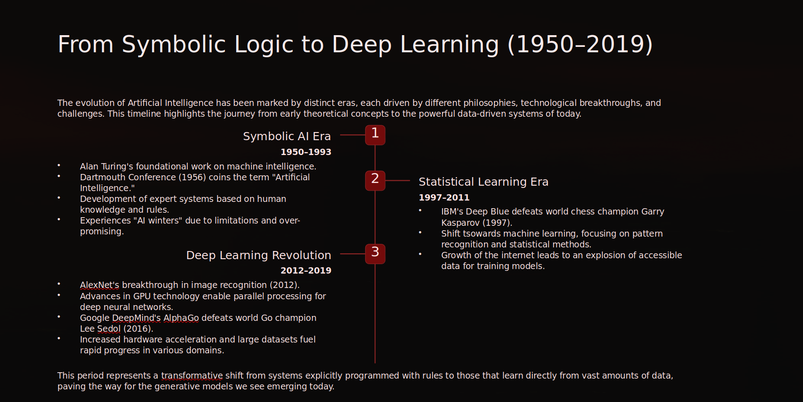

AI Infrastructure Architect

One question started it all — can machines think?
Nervous about interviews? This one coaches back.
Watch this space.
I build intelligent systems that bridge machine learning, software engineering, and real-world deployment. My work focuses on building scalable tools, computer vision pipelines, and infrastructure that turns research ideas into practical systems.